حل کردن روبیک به روش مبتدی و عملی (با عکس)
امروز با آموزش روبیک سه در سه به روش مبتدی در خدمتتون هستیم
قبل از شروع آموزش یک مداد و یک کاغذ کنار دستتون باشه و نکات مهم را یادداشت کنید و هینطور روبیکتان در دستانتان باشد که دونه به دونه حرکات را انجام بدهید
برای شروع گام اول این است که باید حروف خوانی روبیک را یاد بگیرید
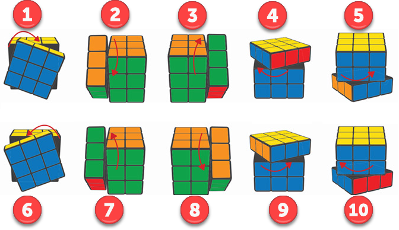1. رو به رو به راست راست
2.چپ به پایین
3. راست به بالا
4. بالا به چپ
5.پایین به راست
6. روبه رو به چپ
7. چپ به بالا
8. راست به پایین
9. بالا به راست
10. پایین به چپ
کلمات خارجی هر کدام از چرخش های بالا
1.F
2.L
3.R
4.U
5.D`
6.F`
7.L`
8.R`
9.U`
10.D
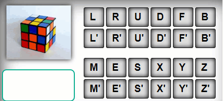قبل از یادگیری این چرخش ها باید بگیم که به چرخش های پاد ساعتگرد توجه کنیم که این چرخش های با علامت «`» نشان داده میشود
حالا میریم سراغ یاد گیری که باید هنگامی که روبیک در دستانمان هست مرکز زرد بالا باشد
در تصویر زیر مرکز، لبه و گوشه را نمایش میدهیم
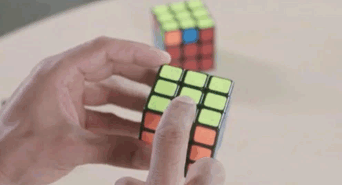حال ما باید دور مرکز زرد یک صلیب سفید درست کنیم مانند تصویر زیر
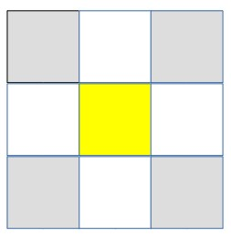در ساخت این شکل فرمول خاصی ندارد و شما به هر روشی که میتوانید این صلیب را درست کنید
شما وقتی که این صلیب را دور مرکز زرد درست کردید باید آن هارا با یک روشی به زیر روبیک منتقل کنید، این طور است که شما یکی از مهره هایی که سفید بوده و شما دور زرد جمع کردید را با مهره پایینش هم رنگ کنید مانند تصویر زیر
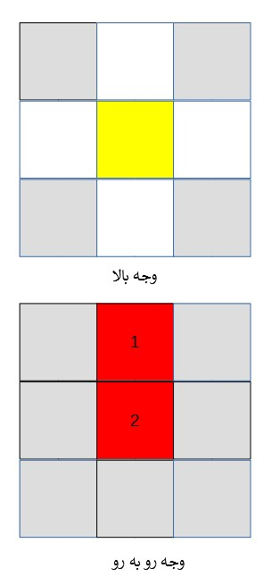بعد از اینکه رنگ های 1 و 2 را با هم تطابق دادید. فرمول زیر را انجام دهید.
فرمول مثبت سفید در پایین:
دوباره صفحه جلو را به راست بچرخانید
یا همان
F2
را اجرا کنید
این مرحله را 4 بار، به ازاء هر کدام از خانه های سفید یک بار، باید انجام دهید.
در پایان این مرحله باید شکلی شبیه تصویر زیر داشته باشید.
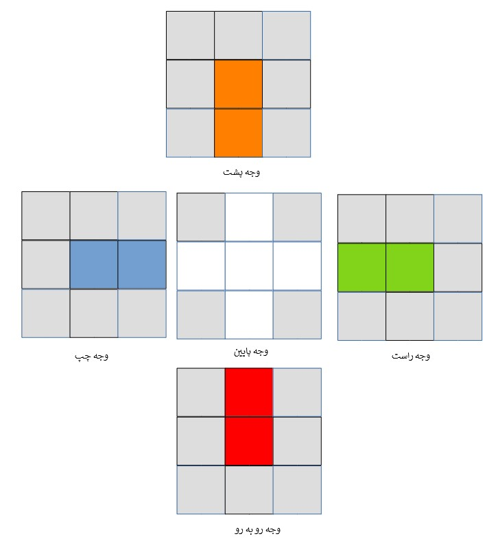مرحله بعدی مرحله جا انداختن گوشه های سفید است که باید آنهارا جا بندازیم تا رنگ سفیدمان کامل بشود
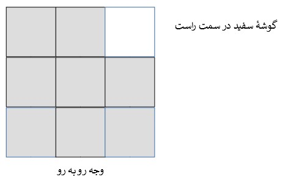ممکن گوشه های سفید بعضی ها در بالای وجه باشند و بعضی ها هم پایین و اما ممکن است بعضی ها هم روی وجه بالایی باشند
اولین کاری که باید بکنید اینست که رنگ کلاه و مرکز گوشۀ سفید را با یکدیگر یکی کنید. منظور از کلاه رنگ خانۀ بالای گوشۀ سفید است. یکی کردن رنگ کلاه و مرکز را در تصویر زیر می بینید. در تصویر زیر یک گوشۀ سفید در سمت چپ داریم که کلاه آن قرمز است. پس مرکز آن را نیز قرمز می کنیم. فراموش نکنید که مشابه مرحله اول برای یکی کردن رنگ ها باید دو ردیف پایینی مکعب ها را با هم بچرخانید.
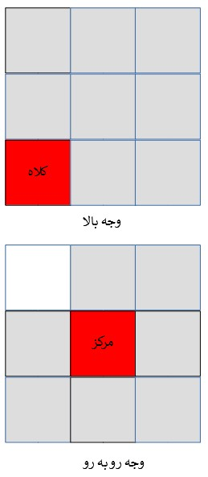با توجه به این که گوشۀ سفید در سمت راست و یا در سمت چپ قرار دارد و بعد از یکی کردن رنگ کلاه و مرکز، یکی از دو فرمول زیر را انجام دهید.
فرمول گوشۀ سفید در سمت راست:
1.بالا به چپ
2.راست به بالا
3.بالا به راست
4.راست به پایین
یا به عبارتی دیگر:
1.U
2.R
3.U`
R`
فرمول گوشۀ سفید در سمت چپ:
فرمول گوشۀ سفید در سمت چپ:
1.بالا به راست
2.چپ به بالا
3.بالا به چپ
4.چپ به پایین
یا به عبارتی دیگر:
1.U`
2.L`
3.U
4.L
در پایان مرحلۀ حل کردن گوشه های سفید، مکعب روبیک شما باید در وضعیت زیر قرار داشته باشد.
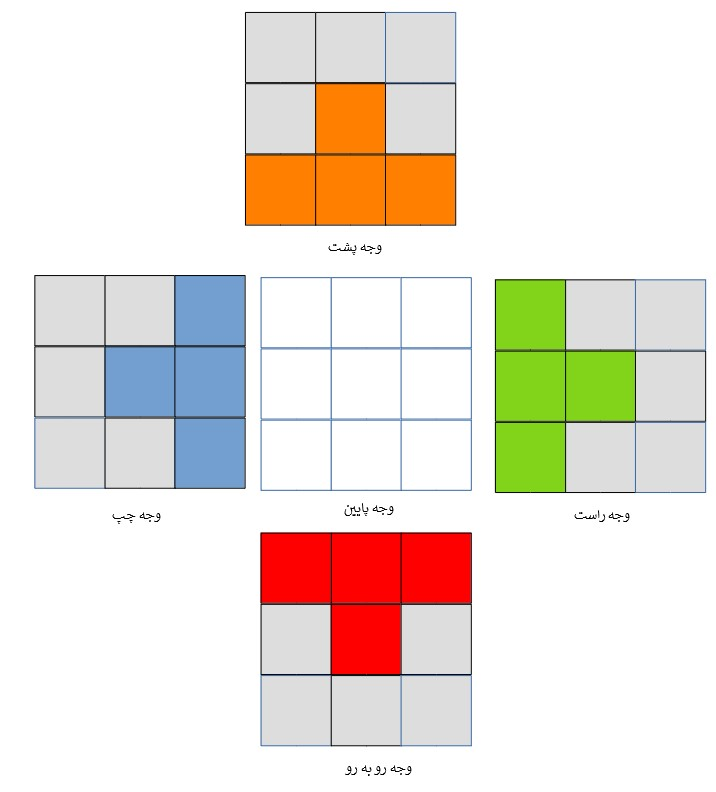گاهی اوقات گوشۀ سفید در جایی غیر از گوشۀ بالا و سمت راست قرار دارد. به عنوان مثال تصویر زیر یک گوشۀ سفید را نشان می دهد که در پایین و سمت چپ قرار گرفته است.
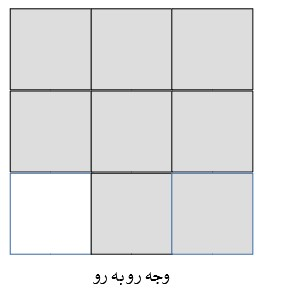اگر مشابه تصویر بالا گوشۀ سفید در محل اصلی خودش قرار نداشت، با توجه به اینکه گوشۀ سفید در سمت راست یا سمت چپ گیر افتاده است فرمول حل کردن گوشۀ سفید مخصوص همان سمت را انجام می دهیم تا گوشۀ سفید آزاد شود. دقت کنید که در این مرحله نیازی به یکی کردن رنگ کلاه و مرکز ندارید، چون اساساً هنوز کلاهی ندارید. بعد از هر مرحله آزاد کردن، دوباره به دنبال گوشه های سفید بگردید و آن ها را حل کنید.
مرحلۀ 4: حل کردن بدون زرد
اول باید درک کنید منظور از بدون زرد چیست. بدون زرد مکعبی است که در ناحیۀ بعلاوۀ مرکزی وجه بالا قرار دارد و مشابه تصویر زیر نه کلاه و نه وجه پایینش هیچ کدام رنگ زرد در خودشان ندارند. تصویر زیر یک بدون زرد را به شما نشان می دهد.
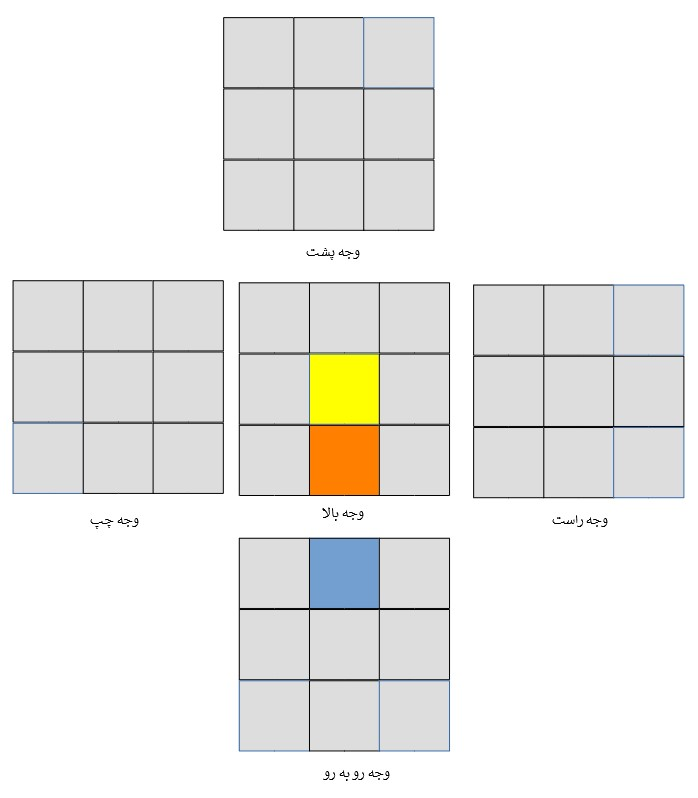برای حل کردن یک مکعب بدون زرد ابتدا رنگ های 1 و 2 آن را مطابق تصویر زیر با یکدیگر یکی می دهیم. فراموش نکنید که برای یکی کردن همانطور که قبلاً هم اشاره کردیم، دو وجه پایینی را با هم بچرخانید.
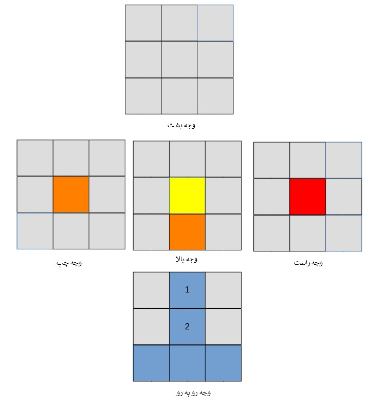بعد از یکی کردن رنگ های 1 و 2 به رنگ کلاه مکعب بدون زرد توجه می کنیم. در مثال بالا رنگ کلاه مکعب بدون زرد ما نارنجی می باشد. الزاماً یکی از مرکزهای سمت راست یا چپ آن هم رنگ نارنجی خواهد داشت. با توجه به اینکه مرکز سمت راست یا مرکز سمت چپ آن رنگ نارنجی داشته باشد، یکی از فرمول های بدون زرد سمت چپ یا راست را انجام می دهیم.
فرمول حل کردن بدون زرد سمت راست:
1.بالا به چپ
2.راست به بالا
3.بالا به راست
4.راست به پایین
5.بالا به راست
6. روبه رو به چپ
7.بالا به چپ
8.روبه رو به راست
یا به عبارتی دیگر:
1.U
2.R
3.U`
4.R`
5.U`
6.F`
7.U
8.F
فرمول حل کردن بدون زرد سمت چپ:
فرمول حل کردن بدون زرد سمت چپ:
1.بالا به راست
2.چپ به بالا
3.بالا به چپ
4.چپ به پایین
5.بالا به چپ
6.رو به رو به راست
7.بالا به راست
8.رو به رو به چپ
یا به عبارتی دیگر
1.U`
2.L`
3.U
4.L
5.U
6.F
7.U`
8.F`
این کار را آنقدر ادامه می دهیم تا هیچ بدون زردی نماند. در پایان این مرحله مکعب روبیک ما باید به شکل زیر باشد.
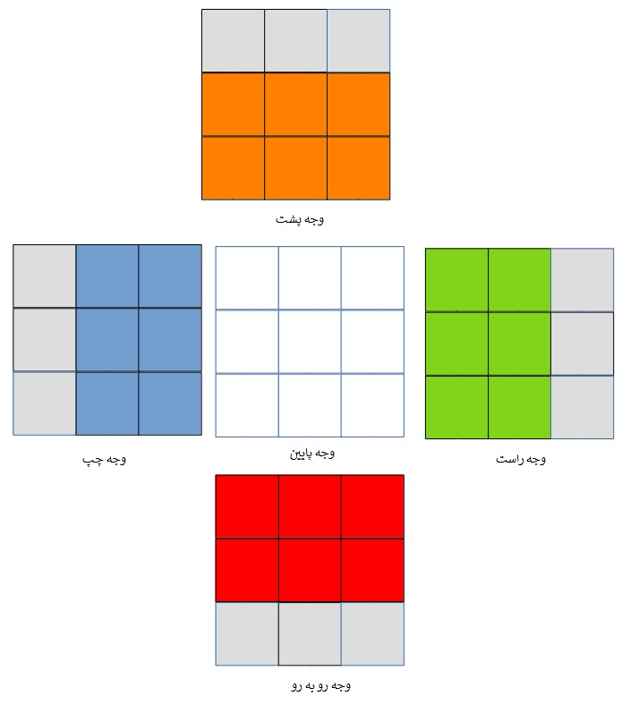حل مشکل عدم تکمیل 6 رنگ
اگر بعد از حل کردن تمامی بدون زردها باز مشاهده کردید که 6 رنگ دو ردیف پایین به درستی تکمیل نشده اند، با توجه به اینکه خانۀ تکمیل نشده در سمت راست یا چپ قرار دارد، فرمول بدون زرد سمت راست یا چپ را انجام دهید. سپس دوباره به دنبال بدون زردها بگردید و فرمول را تکرار کنید. این مرحله را باید آنقدر تکرار کنید تا شش رنگ کامل شوند.
مرحلۀ 5: ساختن مثبت زرد در بالا
هدف این مرحله این است که یک مثبت زرد به شکل زیر در وجه بالا بسازیم.
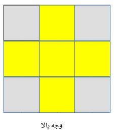قبل از این که شروع به ساخت مثبت زرد کنیم، ممکن است با سه وضعیت متفاوت رو به رو باشیم. این سه وضعیت را در زیر می بینید.
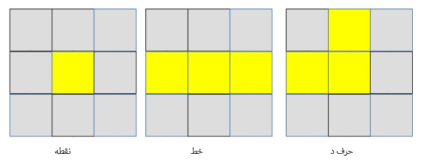در هر کدام از این سه حالت که بودید، نحوۀ نگه داشتن مکعب روبیک در دستتان به شکلی باشد که تصاویر مشابه یکی از این حالت ها باشند. اگر در حالت نقطه باشید، مکعب را به هر شکلی نگه دارید، همانند تصویر بالا خواهد بود. در مورد حالت خط توجه کنید خط را باید افقی ببینید و نه عمودی. در مورد حالت "حرف د" نیز دقیقاً باید حرف "د" فارسی را به شکل بالا مشاهده نمایید. در ادامه فرمول مثبت زرد را انجام دهید.
فرمول ساختن مثبت زرد در بالا:
1.رو به رو به راست
2.راست به بالا
3.بالا به چپ
4.راست به پایین
5.بالا به راست
6.رو به رو به چپ
یا به عبارتی دیگر:
1.F
2.R
3.U
4.R`
5.U`
6.F`
توجه داشته باشید که ممکن است مجبور شوید چند بار فرمول مثبت زرد را انجام دهید تا به شکل مثبت زرد برسید. در پایان این مرحله باید مکعب روبیک شما به شکل زیر باشد.
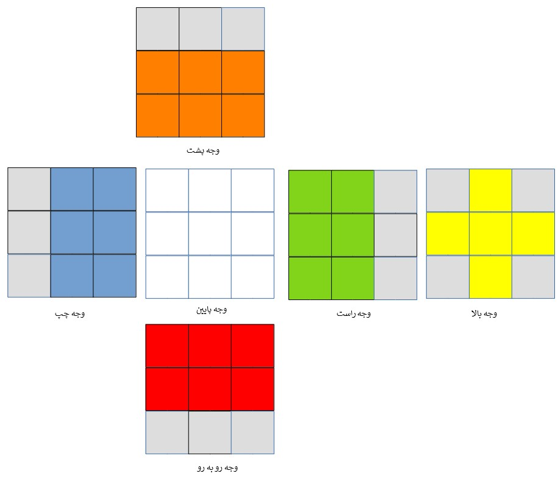مرحلۀ 6: ماهی
هدف از مرحلۀ ماهی اینست که وجه بالا به شکل تماماً زرد در بیاید.
اما برای این که به این شکل تماماً زرد برسید باید یک سری کارها انجام دهید. اولین قدم اینست که در وجه بالا شکل یک ماهی را بسازید. ماهی را در تصویر زیر می بینید. اگر کمی دقت کنید، ماهی را در آن خواهید دید. اگر این ماهی را از روبه رو نگاه کنید، سر آن باید به سمت قلب شما باشد.
توجه مهم: شکل ماهی باید تماماً به همین شکل باشد و خانه های خاکستری رنگ می توانند هر رنگی به جز رنگ زرد باشند.
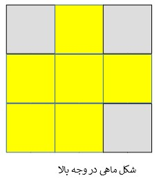قبل از شروع به ساخت شکل ماهی، دو وضعیت مختلف ممکن است برایتان پیش آید، اول اینکه شکل ماهی از قبل ساخته شده باشد که کارتان ساده است. اما اگر شکل ماهی ساخته نشده بود، در ادامه چگونگی تبدیل شکل بدون ماهی به ماهی را به شما آموزش داده ایم. اگر شکل ماهی آماده بود، سر ماهی را به سمت قلبتان بگیرید و فرمول را بزنید. در بسیاری از مواقع بعد از انجام فرمول ماهی مجبور می شوید دوباره سر ماهی را به سمت قلبتان بگیرید و باز فرمول ماهی را تکرار کنید.
فرمول ماهی:
برای اینکه خوتان را بسنجید و ببیند که حروف خوانی را خوب یادگرفتید این فرمول را به صورت انگلیسی میگذاریم
1.R
2.U
3.R`
4.U
5.R
6.U
7.U
8.R`
بعد از تکمیل مرحلۀ ماهی، باید مکعب روبیک شما در شکل زیر باشد.
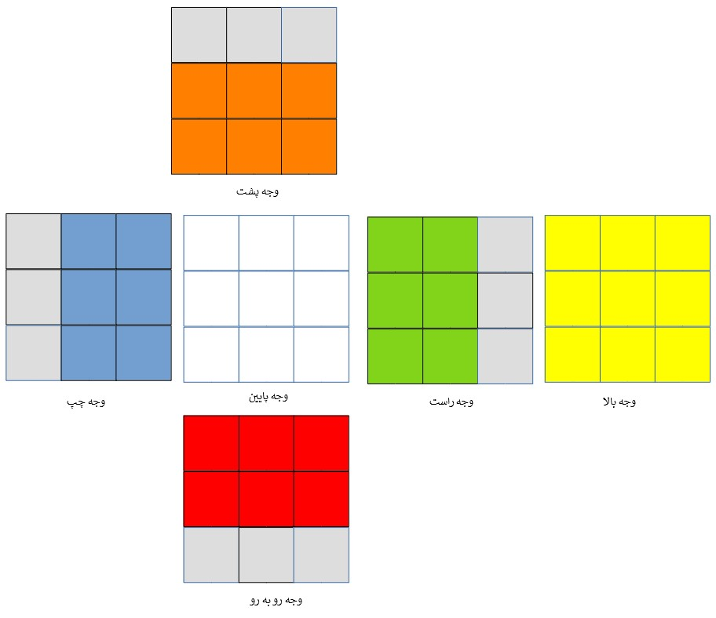تبدیل بدون ماهی به ماهی:
برای تبدیل بدون ماهی به ماهی، ابتدا زرد سمت چپ را در وجه رو به رو انتخاب کنید. یعنی وجه رو به روی شما باید به شکل زیر باشد. سپس فرمول ماهی را انجام دهید. اگر بدون ماهی به ماهی تبدیل نشد، دوباره زرد سمت چپ را در وجه رو به رو انتخاب کرده و فرمول ماهی را تکرار کنید.
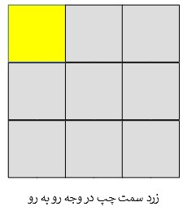مرحلۀ 7: جفت رنگ
در مرحلۀ جفت رنگ ابتدا باید به دنبال دو خانۀ هم رنگ در یکی از وجه های روبه رو، پشت، چپ، یا راست باشید. حالا نام این وجه شما "جفت رنگ" می باشد. دو وجه پایین را به نحوی حرکت دهید که رنگ جفت رنگ و دو ردیف زیر آن با هم یکی شوند. سپس وجه "جفت رنگ" را در سمت چپ مکعب روبیک قرار داده و فرمول جفت رنگ را انجام دهید. اگر وجه جفت رنگ نداشتید، کافیست یک بار فرمول جفت رنگ را انجام دهید تا این وجه برایتان ایجاد شود.
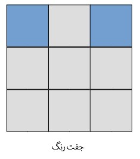فرمول جفت رنگ:
L`
U
R
U`
L
U
R`
بعد از اجرای این فرمول میبینید که رنگ زرد شما به شکل ماهی در آمده و شما باید دوباره فرمول ماهی را اجرا کنید تا به جفت رنگ برسید
در پایان این مرحله مکعب روبیک شما به شکل زیر در می آید.
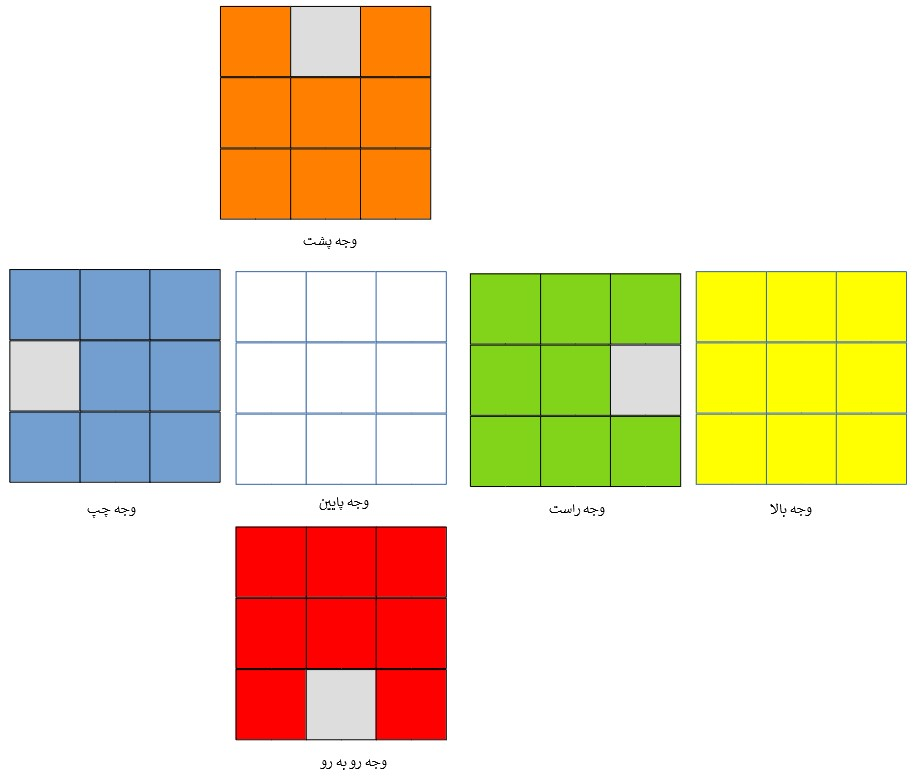مرحلۀ 8: دیوار کامل (مرحلۀ آخر)
در این مرحله مکعب روبیک شما کامل می شود و تمامی وجه ها هم رنگ می شوند. اولین قدم در انجام این مرحله این است که یکی از وجه های رو به رو، پشت، راست یا چپ کامل شوند. به این وجه "دیوار کامل" می گوییم. بعد از این که دیوار کامل را پیدا کردید آن را در وجه پشت مکعب روبیک قرار دهید و فرمول دیوار کامل را انجام دهید. اگر دیوار کامل نداشتید کافی است یک بار فرمول آن را انجام دهید تا دیوار کامل ایجاد شود.
فرمول دیوار کامل:
R
U`
R
U
R
U
R
U`
R`
U`
R
R
هم اکنون مکعب روبیک شما کامل شده است.
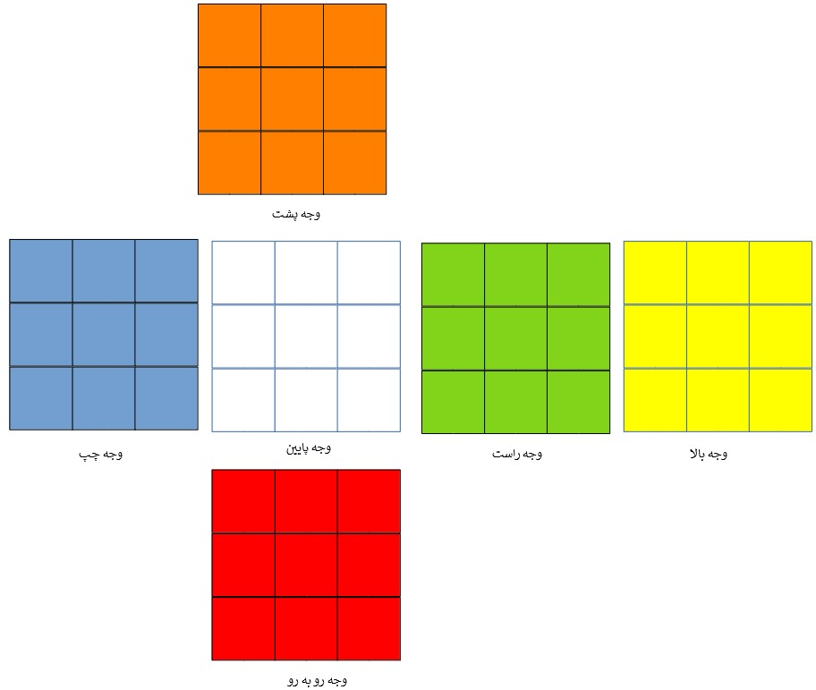